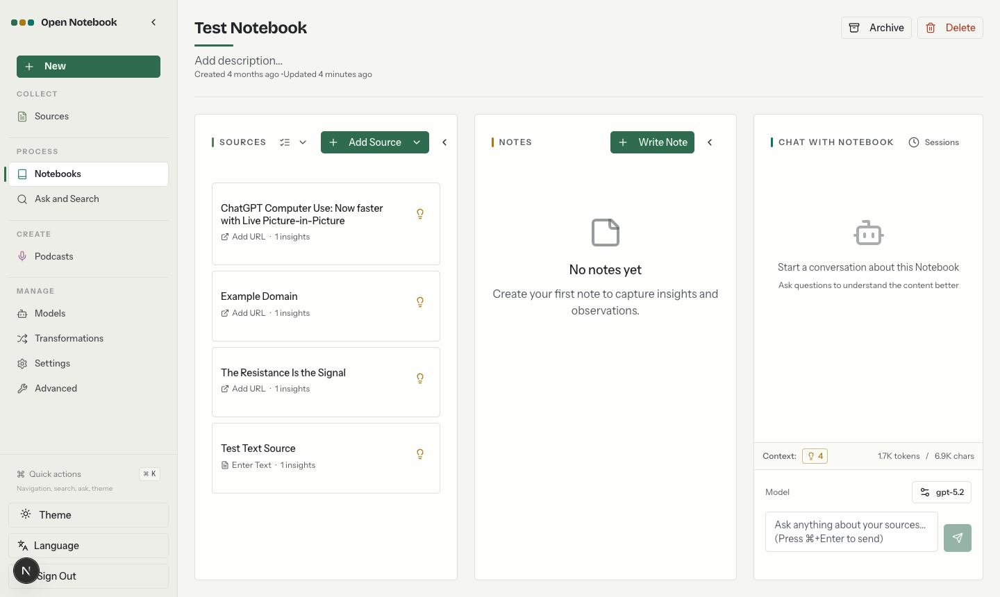

01
AI 原生 · MIT · 40.9k
Open Notebook：把“上下文”变成可见的第四个对象
NotebookLM 的开源复刻，但界面里最值得看的不是对话，是 Context 计数。

界面怎么排
左侧不是文件树，而是按研究动作分组的导航：COLLECT 放 Sources，PROCESS 放 Notebooks 和 Ask and Search，CREATE 放 Podcasts，MANAGE 放 Models、Transformations、Settings、Advanced；底部固定 Quick actions（⌘K）、主题、语言和退出。主区是三张等宽卡片：Sources、Notes、Chat with Notebook。
所有东西围绕一个 notebook 聚合。来源卡片上直接标“1 insights”，聊天输入框上方写着 Context 4、1.7K tokens / 6.9K chars，右侧是模型选择器。每条回答还能回指用了哪些来源和笔记。
交互签名
上下文不是设置里的开关，而是随时可见、可数、可换的对象。要加材料，点 Add Source；要从材料里提炼，点来源卡片的灯泡；要把提炼结果变成笔记，中间栏直接 Write Note。三栏之间的流向是单向可读的：来源 → 笔记 → 对话。
模型选择放在输入框旁边，而不是设置页深处。研究时人会不断在“便宜模型粗读、贵模型精读”之间切换，这个动作应该发生在提问的地方。